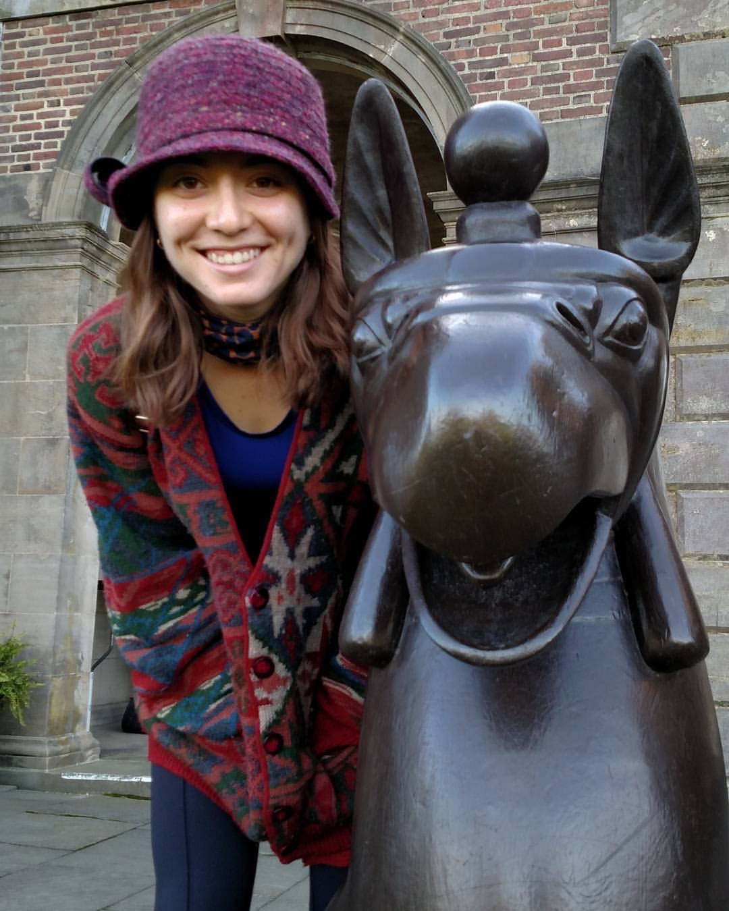
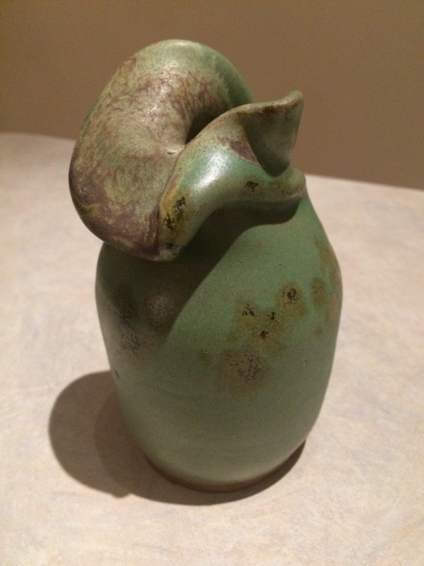
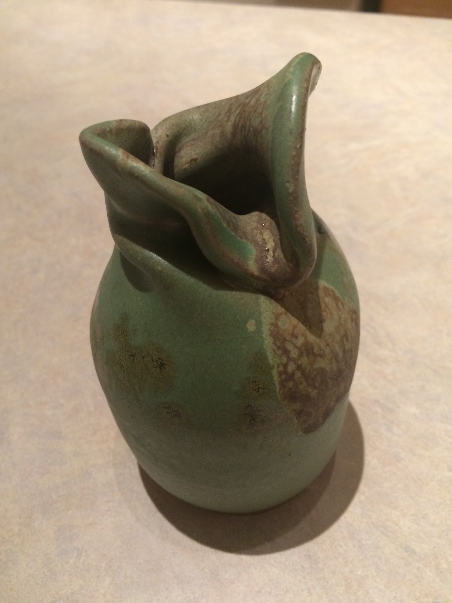
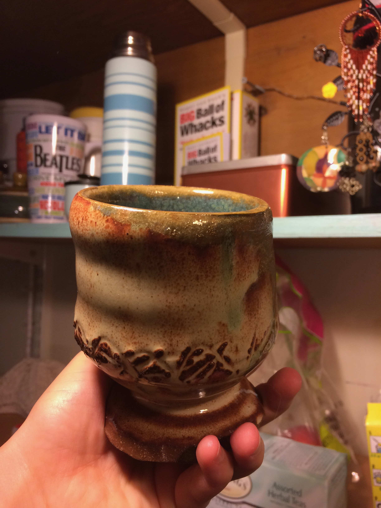
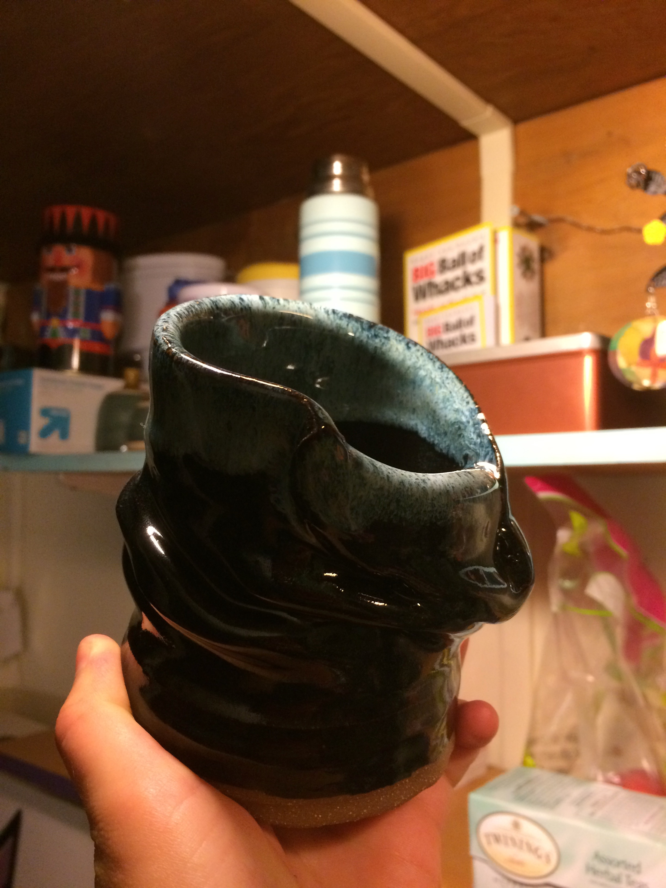
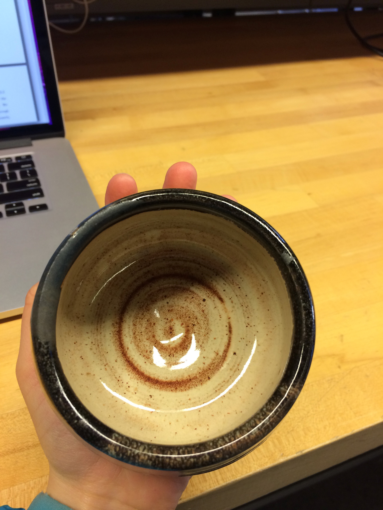
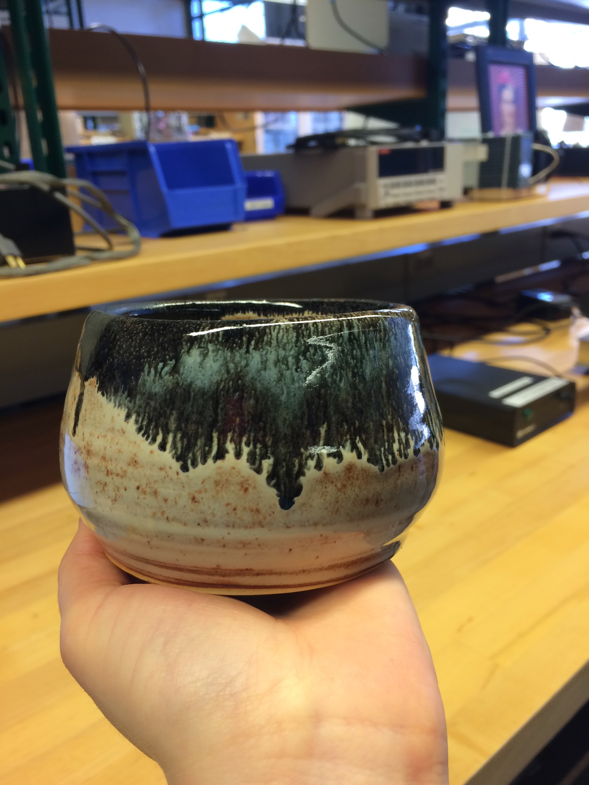
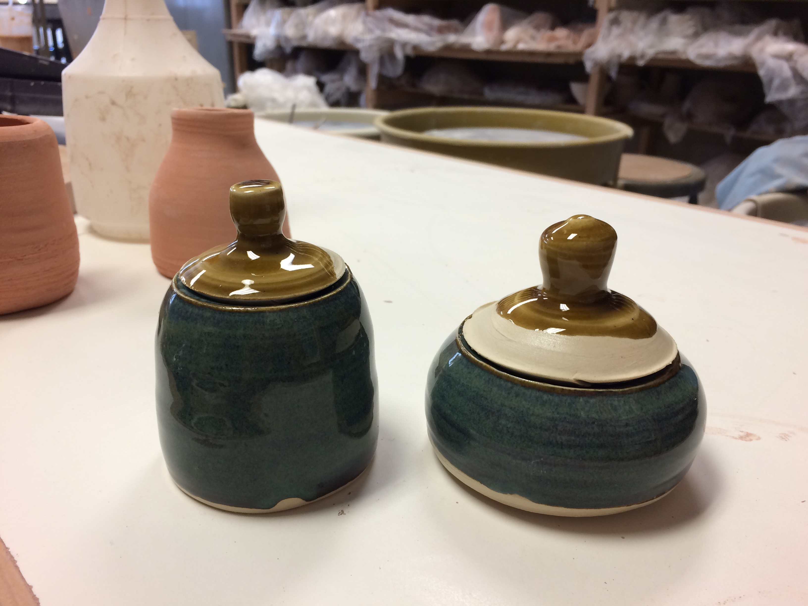

About
My name is Elise Newman and I am a Ph.D student in the Linguistics department at MIT. My current research interests are mainly in syntax, though I also enjoy thinking about the syntax-semantics and syntax-morphology interfaces. Specifically I want to understand agreement phenomena and how they interact with different types of movement. The languages I have studied most closely are English and Shanghainese, in which I have explored head movement and the verbal domain. You can read more about my work in the "Publications" section.
Outside of class and research, I have a number of hobbies to keep me occupied. My main extracurriculars are soccer, music, and pottery. Pottery is a recent addition but it has completely captivated me. Wheelthrowing is a skill with a steep learning curve but it is also incredibly satisfying and almost meditative (check out some of my work in the "Miscellaneous" section!). I also do various types of yoga and generally enjoy being outside hiking, wandering, swimming, etc. Home projects include homemade yogurt, kombucha, and pickles. You can learn more about my food projects in the "Miscellaneous" section as well.
Anyway, thanks for stopping by and feel free to reach out with questions!

Here is a link to my resume.
Publications
Unpublished Work (class projects/independent studies)
E2P2: The Extended Extended Projection Principle. Work on the English auxiliary system and its interaction with negation. There are many open questions, but here is some progress.
The Shanghainese ne construction. This paper was written as an undergraduate thesis. The analysis could be reworked in a number of ways to integrate modern notions of case. Paper here.
My physics thesis for anyone interested! It is about neutrino research, specifically about aspects of an experiment designed to measure sterile neutrinos.
My undergraduate phonetics final project on stress and its effect on vowel length.
First year first semester squibs. Syntax, Semantics, Phonology.
Presentations
LSA 2018 workshop on the syntax of clausal arguments in Bantu: the Lubukusu agreeing complementizer. The talk that my copresenter Danfeng Wu and I presented can be found here.
Pottery







Food
How I make kombucha:
Step 1: Make Tea
Kombucha needs a chemical found in all tea plants (actual tea plants, not herbal infusions). Most kombucha is made with black tea but I like to make mine with white tea, as I like the flavor and prefer minimal contact with caffeine (I have also made kombucha with green tea, which worked great as well). I usually use one tea bag per 2-3 liters of hot water and let steep for 15-20 minutes.
Step 2: Add Sugar
Kombucha also requires sugar for the fermentation process. I add 1 cup of sugar per 4 liters of tea and let the tea cool to room temperature.
Step 3: Add SCOBY
Once the tea is at room temperature, I add my SCOBY and let stand for 10 days (I got my SCOBY from Amazon). I like to cover my kombucha with a bandana to keep out extraneous particles while still allowing air flow. Kombucha tends to ferment better at 70-72 degrees F, so it might need more time if your house is cooler.
How to make yogurt (with an instant pot):
Step 1: Boil the Milk
We have a magical device called an instant pot that has a million functions on it. It has a pressure cooker, slow cooker, rice cooker, steamer, sautee option, and a yogurt option, among others that I haven't explored. The yogurt option makes making yogurt extremely easy, as it perfectly boils the milk at 83 degrees Celcius for an hour. If you are doing this without an instant pot, you should verify these numbers with other sources. I like to use organic whole milk, because it has been shown to be richer in omegas than alternatives (and I also love milkfat, it is delicious).
Step 2: Cool the Milk and Add the Culture
Let the milk cool to 43 degrees C and then add a few tablespoons of yogurt (this is the culture). I have found that if the milk cools too quickly, (i.e. if you put it in the freezer), the yogurt can turn out gritty. I have also found that the yogurt consistency is better if you allow the yogurt culture to reach room temperature before adding it to the milk.
Step 3: Let Sit in Warmth
I now put the milk with culture back into the instant pot and let it sit on the yogurt setting for 8.5 hours. I am not sure what temperature the yogurt needs exactly, though I think it is around 95-100 degrees F. At the end of the 8.5 hours, put it in the fridge and enjoy!